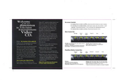
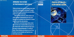

CD-i Technical Documentation / Software
On this page, you will find several technical documents related to CD-i software applications. Most of them are in Portable Document Format, you need Adobe Acrobat Reader to view or print them.
- Video-CD on CD-i release 3.11
Philips Electronics NV - March 1995
Product information and installation notes for the Video-CD on CD-i application release 3.11. The manual describes how the application should be installed and how it can be customized.
Download vcd_on_cdi_311.pdf (PDF, 37 pages)
|
|
- Video-CD on CD-i release 4.1
Philips Electronics NV - September 1995
Product information and installation notes for the Video-CD on CD-i application release 4.1. This version was the latest official release of the Video-CD engine, especially targeted at Video-CD 2.0 discs with a PSD file. The manual describes how the application should be installed and how it can be customized.
Download vcd_on_cdi_41.pdf (PDF, 21 pages)
|
|
- Video-CD on CD-i sample disc inlay
This is a sample Video-CD disc inlay explaining the functions and on-screen buttons of the Philips Video-CD Application.
Download vcd_on_cdi_inlay.pdf (PDF, 1 page)
|
 |
- Photo-CD on CD-i 3.x Icon Menu Guide
Philips Electronics NV - 1992
This document describes how to use a Photo-CD on a CD-i player, according to Philips' Photo-CD on CD-i application version 3.x. It gives full detailes on how to access all features, including the creation of custom slide shows and info on Portfolio Photo-CD discs with pre-defined sequences.
Download pcd_on_cdi_3x.jpg (598 KB - JPEG)
|
 |
|

{kind=link}
{kind=link}
{kind=link}
{kind=link}
{kind=link}